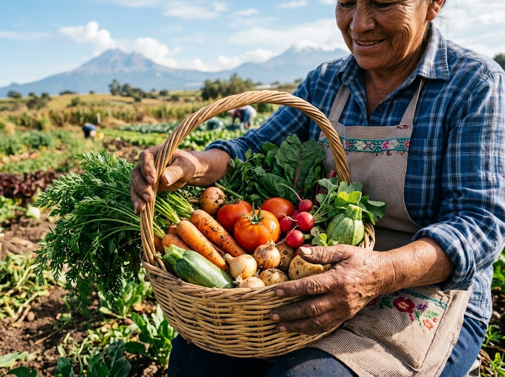

El campo marca el ritmo
Identificamos qué ingredientes están disponibles con nuestros productores.
Descubre un menú que cambia con las cosechas, los productores y las posibilidades de cada temporada.

Así funciona el Menú Vivo
No partimos de una carta fija. Partimos de lo que hay. Cada semana revisamos con nuestros productores qué está listo para cortarse y a partir de ahí decidimos qué se cocina.
Identificamos qué ingredientes están disponibles con nuestros productores.
El equipo transforma esos ingredientes en platillos especiales.
Conoces el origen, la historia y el sabor de cada propuesta antes de probarla.
Del productor a tu mesa
Un mapa ilustrativo de la región. Toca cada punto para conocer a quien siembra, cría o recolecta lo que llega a la cocina.
Un ingrediente, muchas posibilidades
Cuando llega una caja grande de Acatepec, la cocina no elige una receta: elige cinco. La penca tierna va al ceviche, la más firme al caldillo, los recortes al relleno. Así casi nada se queda fuera del plato.
Cinco preparaciones que nacen del mismo corte semanal.
El campo cambia, el menú también
Referencias ilustrativas de lo que suele darse en la región. La disponibilidad real depende de cada cosecha, de la lluvia y de lo que decidan los productores.
Participa en el Menú Vivo
Elige el ingrediente que te gustaría encontrar en la cocina la próxima temporada. Los más votados se platican con los productores antes de cada cambio de menú.
Te avisamos cuando cambie la cosecha y con ella la carta de la semana.
Prototipo conceptual: los datos no se envían a ningún servidor.
Por qué lo hacemos así
El Menú Vivo busca fortalecer el vínculo con quienes siembran cerca de nosotros, aprovechar cada ingrediente hasta donde alcance y darle al cliente una razón para volver: nunca encuentra exactamente la misma carta dos veces.

La lista crece y se reduce con el año. Lo que no está en el campo, no está en la carta.
Cada temporada abre la puerta a una familia productora más de la región de Cholula y alrededores.
Un mismo ingrediente puede recorrer la carta completa: entrada, fondo, guarnición y hasta el pan.